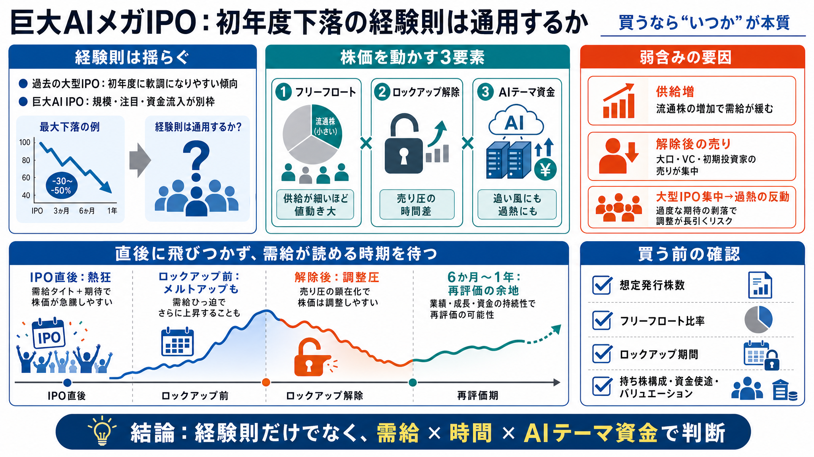

SpaceX, OpenAI & Anthropic IPOs : A $3 Trillion Stress Test
# SpaceX, OpenAI & Anthropic IPOs : A $3 Trillion Stress Test | Tomasz Tunguz. [Tomasz Tunguz](https://tomtunguz.com/). …

主要テックIPO30件で、初年度の最大下落は最大55%程度。
経験則: しばしば統計で語られる傾向（Japanese gloss）SpaceX/Anthropic/OpenAIは市場への影響が極端で、同じ結論にならない可能性。
規模差: 通常より需給と注目が強く変わる（Japanese gloss）売却できる人が限定され、供給が目立ちにくい。
ロックアップ（lock-up）: 売却制限期間（Japanese gloss）売却可能者が増え、短期的に需給が崩れやすくなる。
需給（supply/demand）: 資金と売りのバランス（Japanese gloss）公開株比率（フリーフロート）が小さいと、需給が不安定になりやすい。
フリーフロート（free float）: 市場で取引可能な株（Japanese gloss）解除タイミングで供給が増え、価格変動の“理由”になり得る。
売り圧（selling pressure）: 売りが先行する力（Japanese gloss）AI関連の広い投資（半導体〜エネルギー等）が追い風にも過熱にもなる。
過熱（overheating）: 期待が先行しやすい状態（Japanese gloss）話題性（物語）での感情的な買いを避ける余地がある。
物語（narrative）: 技術・覇権への期待の語り（Japanese gloss）価格が説明可能な局面（ロックアップ/需給変化）で再評価が起きうる。
再評価（re-pricing）: 市場が価格を見直すこと（Japanese gloss）資金流入の規模が大きく、初期の値動きが需給以外の力でも増幅される。
市場の吸収力（market absorption）: 注目に応じて資金が集まりやすい力（Japanese gloss）上場後の“確率分布”が過去事例とズレる可能性がある。
確率分布（probability distribution）: 起こりやすさの全体像（Japanese gloss）公開される株の比率が小さいと、ちょっとした売買で需給が大きく揺れる。
解除で売却可能者が増え、短期の供給が増えて調整につながり得る。
短期間に大型が続くと、熱狂の反動として調整が起きる可能性。
売却が制限される間は、供給が抑えられ上昇しやすくなる。
メルトアップ（melt-up）: 売りが少ない中で急騰しやすい局面（Japanese gloss）解除で売りが増えると、脆い需給が崩れて調整につながる可能性。
調整（correction）: 価格が下方向に修正されること（Japanese gloss）需給の土台を決める要素。数が大きいほど需給インパクトも大きくなる。
発行株数（shares）: 企業が新たに発行する株（Japanese gloss）市場で動く株が少ないほど、需給の揺れが強くなりやすい。
比率（ratio）: 全体に占める割合（Japanese gloss）解除の“月/タイミング”は売り圧の発生タイミングに直結しやすい。
解除（expiration）: 制限が終わること（Japanese gloss）設備投資が半導体からエネルギーや建設まで波及し、株価を押し上げた。
設備投資（capex）: 設備に投じる支出（Japanese gloss）資金流入は支援材料だが、“熱狂の源泉”になり、調整局面も作りうる。
調整局面（adjustment phase）: 需給が崩れて価格が修正される局面（Japanese gloss）初期変動とロックアップ後の供給増という、説明可能なリスクを先に織り込む。
織り込む（price in）: 市場が前提として反映する（Japanese gloss）ロックアップ解除の具体、需給シミュレーション、保有者構成などの定量が不足。
定量（quantitative）: 数値で評価する情報（Japanese gloss）Truist Wealthの集計として「初年度最大55%下落」傾向が言及。
巨大規模が注目と需給に与える影響が中心。
評価例：SpaceX 約1.8兆ドル目標（Japanese gloss）供給増のタイミングとフリーフロートが株価変動の理由になり得る。
用語：メルトアップ/調整（Japanese gloss）# SpaceX, OpenAI & Anthropic IPOs : A $3 Trillion Stress Test | Tomasz Tunguz. [Tomasz Tunguz](https://tomtunguz.com/). …
**SpaceX** has priced its planned **$75 billion U.S. IPO** at **$135 per share**, implying a valuation of about **$1.75 …
[. For a broader view of gov…
# What advisors need to know about the coming mega IPOs. If SpaceX, OpenAI, and Anthropic launch IPOs this year, the imp…